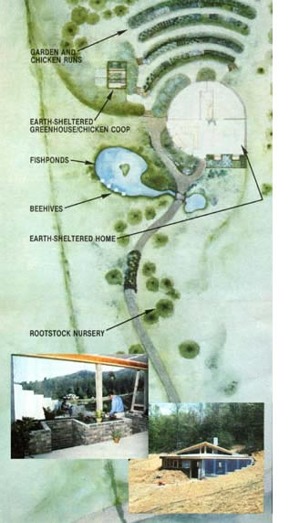

For the last eight months, MOM's village crew has been planning and building our new . . .
How would you react to discovering a neatly integrated project that includes a 1,000square-foot, passive solar, earth-sheltered, two-bedroom home (with attached greenhouse) . . . a garden and livestock area capable of producing an abundance of food with minimal effort . . . and a microhydropower system that provides electricity? Not bad, huh? OK, now what if the price tag for the whole thing was less than $10,000?!
A bit hard to believe? Well, we've developed all of that in MOTHER's exciting new . effort: the Homestead on a Shoestring. Staff members at our Eco-Village have combined low-cost housing, energy-efficient design, and permaculture techniques to build a showcase mini-farmstead that s hould be capable of providing most of a small family's basic food, shelter, and energy needs.
From the start, the project was planned to [11 do more with less in land and building materials . . . [2] be as self-supporting as possible . . . and [3] work within the environment at the site. To accomplish these goals, each part of the homestead-including house, gardens, fishponds, livestock, and more-interacts with the others to create a diverse, interrelated (and practically self sustaining landscape. For example, chickens routed through cleverly designed garden runs help to control in sect pests and provide fertilizer (of course, biddies contribute eggs and meat, as well Honeybees not only create natural sweets, b also pollinate the plant life and-since the' hives are conveniently located over the po - feed the fish with dead apian workers. An the attached greenhouse (shown in the ph to graphs) furnishes food, flowers, and garden starts . . . while it helps to heat the home
Our Homestead on a Shoestring will be developed and finely tuned in the seasons ahead to discover the maximum efficiency and productivity possible from a small (less than three acres) farm . . . and we'll share that experience with you in future issues of t magazine. In the meantime, during this mere or early fall you can observe our first season's progress for yourself by visiting MOTHER's EcoVillage (see page 116 more information) and attending one of the regularly scheduled presentations on a newest development!
|
 STAFF PHOTOS |
|
|